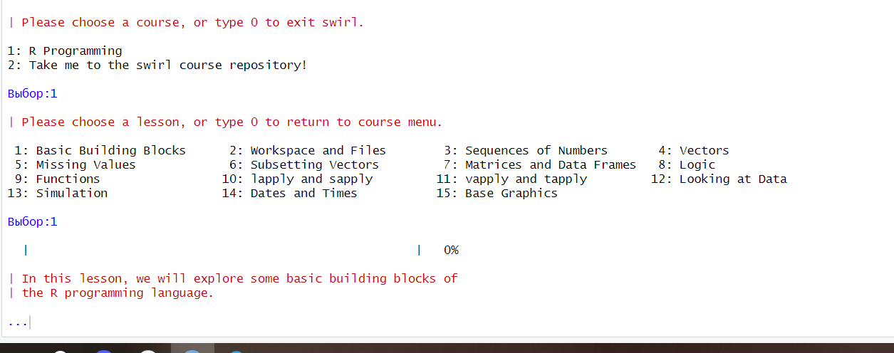
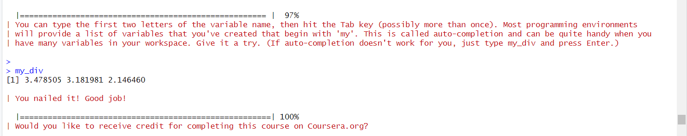
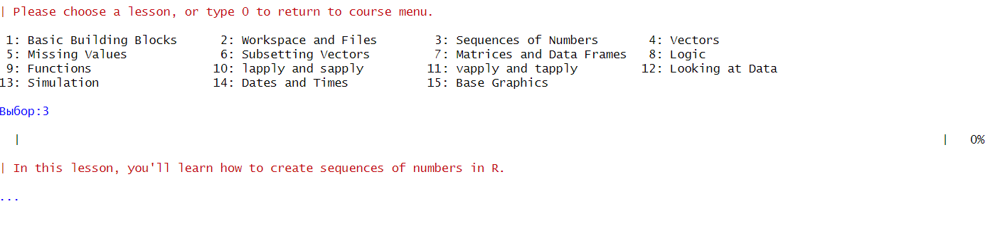
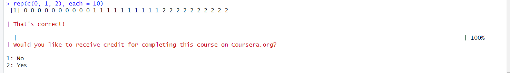
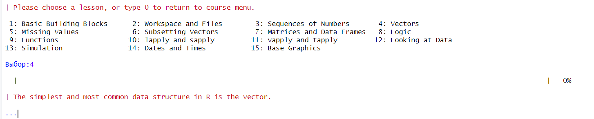

5+7[1] 12Воспользуемся RStudio
Заходим в Packages и устанавливаем swirl
Проходим первый урок: Basic Building Blocks
Начало первого урока:

In its simplest form, R can be used as an interactive calculator. Type 5 + 7 and press Enter
5+7[1] 12| Type x <- 5 + 7. It's important to include a single space on each side of the assignment operator, but do NOT put a space between the
| `<` and the `-` that form the arrow.x<-5+7| Type y <- x - 3 and press Enter. Whether you use x - 3 or x-3 is personal preference, but it's good habit to include a space on either
| side of the assignment operator.y<- x-3| The easiest way to create a vector is with the c() function, which stands for 'concatenate' or 'combine'. To create a vector containing
| the numbers 1.1, 9, and 3.14, type c(1.1, 9, 3.14). Try it now and store the result in a variable called z.z<- c(1.1,9,3.14)| Anytime you have questions about a particular function, you can access R's built-in help files via the `?` command. For example, if you
| want more information on the c() function, type ?c without the parentheses that normally follow a function name. Give it a try.?cзапускаю httpd сервер помощи... готово| You can combine vectors to make a new vector. Create a new vector that contains z, 555, then z again in that order. Don't assign this
| vector to a new variable, so that we can just see the result immediately.c(z,555,z)[1] 1.10 9.00 3.14 555.00 1.10 9.00 3.14| Numeric vectors can be used in arithmetic expressions. Type the following to see what happens: z * 2 + 100z*2+100[1] 102.20 118.00 106.28| Take the square root of z - 1 and assign it to a new variable called my_sqrt.my_sqrt<-sqrt(z-1)| Assign the result of sqrt(z - 1) to a variable called my_sqrt.my_sqrt<-sqrt(z-1)| Before we view the contents of the my_sqrt variable, what do you think it contains?
1: a vector of length 3
2: a single number (i.e a vector of length 1)
3: a vector of length 0 (i.e. an empty vector)
Выбор:1
| Now, create a new variable called my_div that gets the value of z divided by my_sqrt.my_div<-z/my_sqrt| Which statement do you think is true?
1: my_div is undefined
2: my_div is a single number (i.e a vector of length 1)
3: The first element of my_div is equal to the first element of z divided by the first element of my_sqrt, and so on...
Выбор:3
| Keep up the great work!
| To see another example of how this vector 'recycling' works, try adding c(1, 2, 3, 4) and c(0, 10). Don't worry about saving the result
| in a new variable.c(1,2,3,4)+c(0,10)[1] 1 12 3 14| Try c(1, 2, 3, 4) + c(0, 10, 100) for an examplec(1, 2, 3, 4) + c(0, 10, 100)Warning in c(1, 2, 3, 4) + c(0, 10, 100): длина большего объекта не является
произведением длины меньшего объекта[1] 1 12 103 4| Type c(1, 2, 3, 4) + c(0, 10, 100) to see how R handles adding two vectors, when the shorter vector's length does not divide evenly into
| the longer vector's length. Don't worry about assigning the result to a variable.
> c(1, 2, 3, 4) + c(0, 10, 100)
[1] 1 12 103 4
Warning message:
In c(1, 2, 3, 4) + c(0, 10, 100) :
longer object length is not a multiple of shorter object length
| Keep up the great work!
| In many programming environments, the up arrow will cycle through previous commands. Try hitting the up arrow on your keyboard until you
| get to this command (z * 2 + 100), then change 100 to 1000 and hit Enter. If the up arrow doesn't work for you, just type the corrected
| command.z*2+1000[1] 1002.20 1018.00 1006.28| You can type the first two letters of the variable name, then hit the Tab key (possibly more than once). Most programming environments
| will provide a list of variables that you've created that begin with 'my'. This is called auto-completion and can be quite handy when you
| have many variables in your workspace. Give it a try. (If auto-completion doesn't work for you, just type my_div and press Enter.)
>
> my_div
[1] 3.478505 3.181981 2.146460
| You nailed it! Good job!
|======================================================| 100%
| Would you like to receive credit for completing this course on Coursera.org?Сообщение о выполнении первого курса

Конец первого урока

Access information about the file "mytest.R" by using
| file.info().file.info(“mytest.R”)
| Determine which directory your R session is using as its current working directory using getwd().getwd()
[1] "C:/PracZahar/Zahar"
| Now take a look at objects that are in your workspace using ls().ls()
[1] "my_div" "my_sqrt" "v" "x" "y" "z"
Assign 9 to x using x <- 9.x<-9| Now take a look at objects that are in your workspace using ls().ls
List all the files in your working directory using list.files() or dir().dir()
"_quarto.yml" "about.qmd" "docs" "index.qmd" "styles.css" "Zahar.Rproj"
| As we go through this lesson, you should be examining the help page for each new function. Check out the help page for list.files with
| the command ?list.files.?list.files
args(list.files)
function (path = ".", pattern = NULL, all.files = FALSE, full.names = FALSE,
recursive = FALSE, ignore.case = FALSE, include.dirs = FALSE,
no.. = FALSE)
NULL
| Assign the value of the current working directory to a variable called "old.dir".old.dir <- getwd()
| Use dir.create() to create a directory in the current working directory called "testdir".dir.create(“testdir”)
Set your working directory to "testdir" with the setwd() command.setwd(“testdir”)
| Create a file in your working directory called "mytest.R" using the file.create() function.file.create(“mytest.R”)
[1] TRUE
| This should be the only file in this newly created directory. Let's check this by listing all the files in the current directory.list.files()
Use file.exists("mytest.R") to check that a file exists.file.exists(“mytest.R”)
[1] FALSE
Access information about the file "mytest.R" by using
| file.info()file.info(“mytest.R”)
| Nice work!
| You can use the $ operator --- e.g., file.info("mytest.R")$mode
| --- to grab specific items
Change the name of the file "mytest.R" to "mytest2.R" by using file.rename()file.rename(“mytest.R”, “mytest2.R”)
| Make a copy of "mytest2.R" called "mytest3.R" using file.copy().file.copy(“mytest2.R”,“mytest3.R”)
| Provide the relative path to the file "mytest3.R" by using file.path().file.path(“mytest3.R”)
You can use file.path to construct file and directory paths that are independent of the operating system your R code is running on. Pass
| 'folder1' and 'folder2' as arguments to file.path to make a platform-independent pathname.file.path(“folder1”, “folder2”)
| ?dir.create will show you the docs.
> ?dir.create
| Create a directory in the current working directory called "testdir2" and a subdirectory for it called "testdir3", all in one command by
| using dir.create() and file.path().dir.create(file.path(‘testdir2’, ‘testdir3’), recursive = TRUE)
| Go back to your original working directory using setwd(). (Recall that we created the variable old.dir with the full path for the orginal
| working directory at the start of these questions.)setwd(old.dir)
Сообщение об окончании второго курса:


| The simplest way to create a sequence of numbers in R is by using the `:` operator. Type 1:20 to see how it works.1:20 [1] 1 2 3 4 5 6 7 8 9 10 11 12 13 14 15 16 17 18 19 20| That gave us every integer between (and including) 1 and 20. We could also use it to create a sequence of real numbers. For example, try
| pi:10.pi:10[1] 3.141593 4.141593 5.141593 6.141593 7.141593 8.141593 9.141593| What happens if we do 15:1? Give it a try to find out15:1 [1] 15 14 13 12 11 10 9 8 7 6 5 4 3 2 1| Pull up the documentation for `:` now.
?':'
The most basic use of seq() does exactly the same thing as the `:` operator. Try seq(1, 20) to see this.seq(1, 20) [1] 1 2 3 4 5 6 7 8 9 10 11 12 13 14 15 16 17 18 19 20| This gives us the same output as 1:20. However, let's say that instead we want a vector of numbers ranging from 0 to 10, incremented by
| 0.5. seq(0, 10, by=0.5) does just that. Try it out.seq(0, 10, by=0.5) [1] 0.0 0.5 1.0 1.5 2.0 2.5 3.0 3.5 4.0 4.5 5.0 5.5 6.0 6.5 7.0
[16] 7.5 8.0 8.5 9.0 9.5 10.0| Or maybe we don't care what the increment is and we just want a sequence of 30 numbers between 5 and 10. seq(5, 10, length=30) does the
| trick. Give it a shot now and store the result in a new variable called my_seq.my_seq <- seq(5, 10, length=30)| To confirm that my_seq has length 30, we can use the length() function. Try it now.length(my_seq)[1] 30| There are several ways we could do this. One possibility is to combine the `:` operator and the length() function like this:
| 1:length(my_seq). Give that a try.1:length(my_seq) [1] 1 2 3 4 5 6 7 8 9 10 11 12 13 14 15 16 17 18 19 20 21 22 23 24 25
[26] 26 27 28 29 30seq(along.with = my_seq) [1] 1 2 3 4 5 6 7 8 9 10 11 12 13 14 15 16 17 18 19 20 21 22 23 24 25
[26] 26 27 28 29 30| However, as is the case with many common tasks, R has a separate built-in function for this purpose called seq_along(). Type
| seq_along(my_seq) to see it in action.seq_along(my_seq) [1] 1 2 3 4 5 6 7 8 9 10 11 12 13 14 15 16 17 18 19 20 21 22 23 24 25
[26] 26 27 28 29 30| If we're interested in creating a vector that contains 40 zeros, we can use rep(0, times = 40). Try it out.rep(0, times = 40) [1] 0 0 0 0 0 0 0 0 0 0 0 0 0 0 0 0 0 0 0 0 0 0 0 0 0 0 0 0 0 0 0 0 0 0 0 0 0 0
[39] 0 0| If instead we want our vector to contain 10 repetitions of the vector (0, 1, 2), we can do rep(c(0, 1, 2), times = 10). Go ahead.rep(c(0, 1, 2), times = 10) [1] 0 1 2 0 1 2 0 1 2 0 1 2 0 1 2 0 1 2 0 1 2 0 1 2 0 1 2 0 1 2| Finally, let's say that rather than repeating the vector (0, 1, 2) over and over again, we want our vector to contain 10 zeros, then 10
| ones, then 10 twos. We can do this with the `each` argument. Try rep(c(0, 1, 2), each = 10).rep(c(0, 1, 2), each = 10) [1] 0 0 0 0 0 0 0 0 0 0 1 1 1 1 1 1 1 1 1 1 2 2 2 2 2 2 2 2 2 2Сообщение о выполнении 3 курса

Четверый курс: Vectors

First, create a numeric vector num_vect that contains the values 0.5, 55, -10, and 6.
num_vect<-c(0.5,55,-10,6)| Now, create a variable called tf that gets the result of num_vect < 1, which is read as 'num_vect is less than 1'.tf <- num_vect < 1| What do you think tf will look like?
1: a vector of 4 logical values
2: a single logical value
(1)tf[1] TRUE FALSE TRUE FALSE| Let's try another. Type num_vect >= 6 without assigning the result to a new variablenum_vect >= 6[1] FALSE TRUE FALSE TRUE| (3 > 5) & (4 == 4)
1: TRUE
2: FALSE
Выбор:2
| (TRUE == TRUE) | (TRUE == FALSE)
1: FALSE
2: TRUE
Выбор:2
| ((111 >= 111) | !(TRUE)) & ((4 + 1) == 5)
1: TRUE
2: FALSE
Выбор:1
| Create a character vector that contains the following words: "My", "name", "is". Remember to enclose each word in its own set of double
| quotes, so that R knows they are character strings. Store the vector in a variable called my_char.my_char<-c("My","name","is")my_char[1] "My" "name" "is" Type paste(my_char, collapse = " ") now. Make sure there's a space between the double quotes in the `collapse` argument. You'll see why
| in a second.paste(my_char, collapse = " ")[1] "My name is"| To add (or 'concatenate') your name to the end of my_char, use the c() function like this: c(my_char, "your_name_here"). Place your name
| in double quotes where I've put "your_name_here". Try it now, storing the result in a new variable called my_namemy_name <- c(my_char, "Andrew")my_name[1] "My" "name" "is" "Andrew"| Now, use the paste() function once more to join the words in my_name together into a single character string. Don't forget to say
| collapse = " "!paste(my_name, collapse = " ")[1] "My name is Andrew"| In the simplest case, we can join two character vectors that are each of length 1 (i.e. join two words). Try paste("Hello", "world!",
| sep = " "), where the `sep` argument tells R that we want to separate the joined elements with a single space.paste("Hello", "world!",sep = " ")[1] "Hello world!"| For a slightly more complicated example, we can join two vectors, each of length 3. Use paste() to join the integer vector 1:3 with the
| character vector c("X", "Y", "Z"). This time, use sep = "" to leave no space between the joined elements.paste(1:3,c("X", "Y", "Z"),sep = "")[1] "1X" "2Y" "3Z"| Vector recycling! Try paste(LETTERS, 1:4, sep = "-"), where LETTERS is a predefined variable in R containing a character vector of all
| 26 letters in the English alphabet.paste(LETTERS, 1:4, sep = "-") [1] "A-1" "B-2" "C-3" "D-4" "E-1" "F-2" "G-3" "H-4" "I-1" "J-2" "K-3" "L-4"
[13] "M-1" "N-2" "O-3" "P-4" "Q-1" "R-2" "S-3" "T-4" "U-1" "V-2" "W-3" "X-4"
[25] "Y-1" "Z-2"Сообщение об конце 4 курса

Задача выполнена при помощи приложения RStudio, удалось познакомится с его функционалом и особенностями.
В данной работе я смог познакомиться с языком R и выполнить учебные задания по swirl.